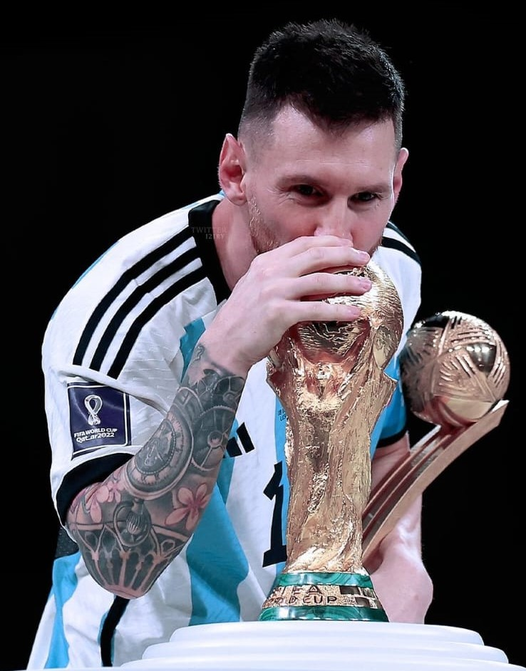
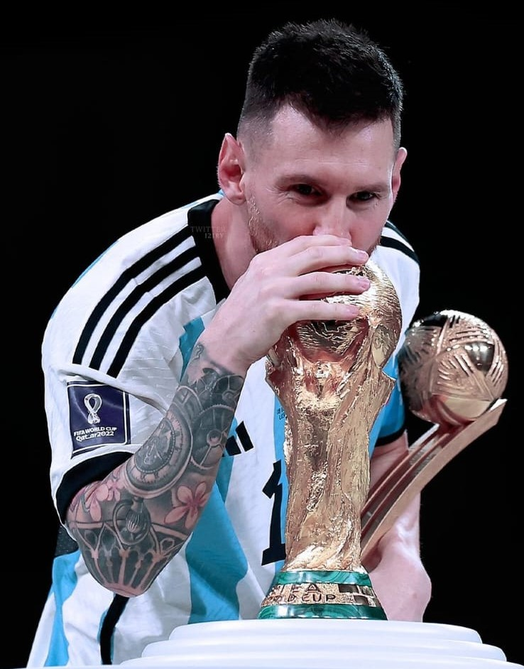

Biografia:
Lionel Messi, nacido el 24 de junio de 1987 en Rosario, Argentina, es considerado uno de los mejores futbolistas de todos los tiempos. Su carrera futbolística ha sido excepcional desde muy temprana edad. Desde niño, Messi demostró un talento innato para el fútbol. A la edad de 13 años, se trasladó a Barcelona, España, para unirse a la prestigiosa academia juvenil del FC Barcelona, conocida como "La Masia". Allí perfeccionó sus habilidades y rápidamente destacó por su velocidad, agilidad, regate y precisión en el disparo. En 2004, con tan solo 17 años, Messi hizo su debut con el primer equipo del FC Barcelona en un partido amistoso. Desde entonces, su ascenso fue exponencial. Con el tiempo, se convirtió en el jugador estrella del equipo y se ganó el apodo de "La Pulga" debido a su pequeña estatura y su habilidad para evadir defensores con facilidad. Durante su carrera en el Barcelona, Messi logró numerosos títulos, entre ellos, diez títulos de La Liga, siete Copas del Rey y cuatro Ligas de Campeones de la UEFA. Además, ganó varios premios individuales, incluyendo siete Balones de Oro, que lo coronaron como el mejor jugador del mundo en múltiples ocasiones. Sin embargo, en agosto de 2021, debido a problemas financieros y reglamentarios, Messi dejó el FC Barcelona, club al que estuvo vinculado durante más de dos décadas. Posteriormente, se unió al Paris Saint-Germain (PSG) en la Ligue 1 de Francia. Actualmente es jugador del Inter de Miami y tiene contrato hasta 2026. En el ámbito internacional, Messi también ha representado a la selección argentina. A lo largo de su carrera con la Albiceleste, ha participado en múltiples Copas América y Copas del Mundo, en 2021 logró su primer título importante con Argentina al ganar la Copa América contra Brasil, luego el primero de Julio de 2022 logró su segundo titulo con la seleccion argentina al ganar la "Finalissima" contra Italia, para finalizar, en diciembre de ese mismo año alcanzaria la gloria maxima al ganar la copa del mundo frente a Francia en un partido que se definió por penales. La carrera futbolística de Lionel Messi está marcada por récords impresionantes, goles espectaculares y una consistente excelencia a lo largo de los años. Su legado en el mundo del fútbol es indudable, y su impacto en el deporte perdurará durante generaciones.
 
